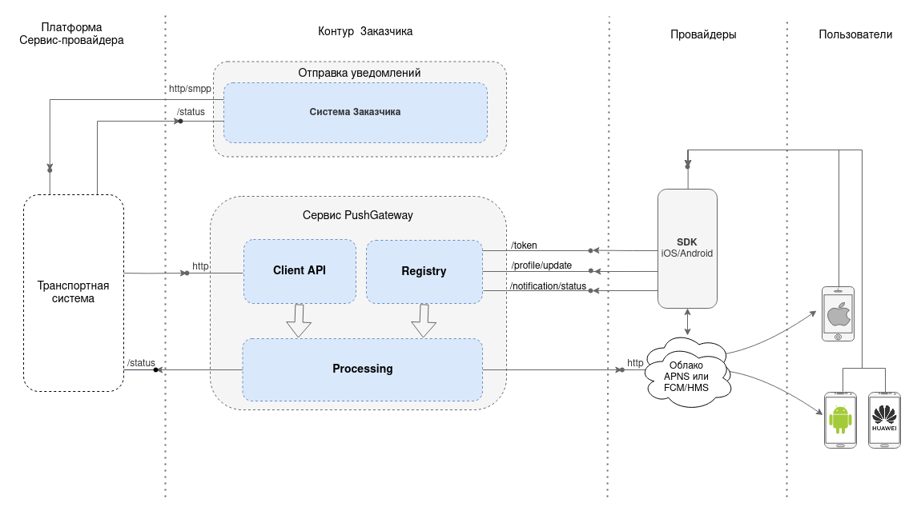

Примеры использования элементов для RST-файла#
Начало работы#
В данном разделе задаются примеры для разных элементов:
таблицы;
картинки;
вкладки;
код;
код во вкладках;
рисунки.
Эти элементы требуют проработки с точки зрения дизайна
Заголовки#
В этом разделе примеры того, как выглядят заголовки для документации
Заголовок 1 уровня#
Заголовок 2 уровня#
Заголовок 3 уровня#
Заголовок 4 уровня#
Заметки#
Примечание
для заметок
Предупреждение
для предупреждений
Совет
для советов и рекомендаций
Важно
для важной информации
Таблица#
В данном разделе пример как выглядит таблица
Причины недоставки сообщений#
Параметр errorCode при успешном выполнении отправки равен 0. При status = 5 возвращает код ошибки.
Ниже описаны коды ошибок для разных типов сообщений.
Код |
Сообщение об ошибке |
Описание ошибки |
|---|---|---|
1 |
unknown |
В процессе доставки сообщения произошла неизвестная платформе ошибка, либо оператор не предоставил ошибку в отчете о доставке. |
2 |
absent-subscriber |
Аппарат абонента был выключен или находился вне зоны действия сети на протяжении всего времени попыток доставки сообщения. |
4 |
failure |
В процессе доставки сообщения произошла ошибка на транспортном уровне сигнальной сети. |
6 |
teleservice-not-provisioned |
У абонента не подключена услуга приема сообщений. |
16 |
busy |
Номер абонента занят. |
Рисунок#
Функциональная схема системы отправки push-уведомлений по интеграционным подключениям к Платформе Сервис-Провайдера с использованием сервиса PushGateway в контуре Заказчика
Схема Pushgateway
В качестве Транспортной системы возможно многофункциональной Платформы Сервис-провайдера.
Платформа предназначена для генерации, маршрутизации, формирования статистики и обработки различных видов сообщений. Возможен прием запросов на отправку как одиночных push-уведомлений, так и push-уведомлений в составе каскада из различных типов сообщений (Viber, WhatsApp, VK, SMS). В этой схеме Система Заказчика выполняет запросы по технологии REST и протоколу SMPP к программному интерфейсу Платформы Сервис-Провайдера.
Примеры кода#
Java#
class HelloWorld {
public static void main(String[] args) {
System.out.println("Hello World!");
}
}
Python#
def hello_world():
print("Hello, World!")
JavaScript#
function helloWorld() {
console.log("Hello, World!");
}
JSON#
{
"key": "value",
"key2": "value2"
}
Вкладки#
Вкладки с примерами запросов#
Здесь может быть подробное описание для JSON, куда отпавлять и все такое…
{
"key": "value",
"key2": "value2"
}
Здесь может быть небольшая табличка
A |
B |
A and B |
|---|---|---|
False |
False |
False |
True |
False |
False |
False |
True |
False |
True |
True |
True |
Вкладки с примерами кода#
def hello_world():
print("Hello, World!")
class HelloWorld {
public static void main(String[] args) {
System.out.println("Hello World!");
}
}
function helloWorld() {
console.log("Hello, World!");
}